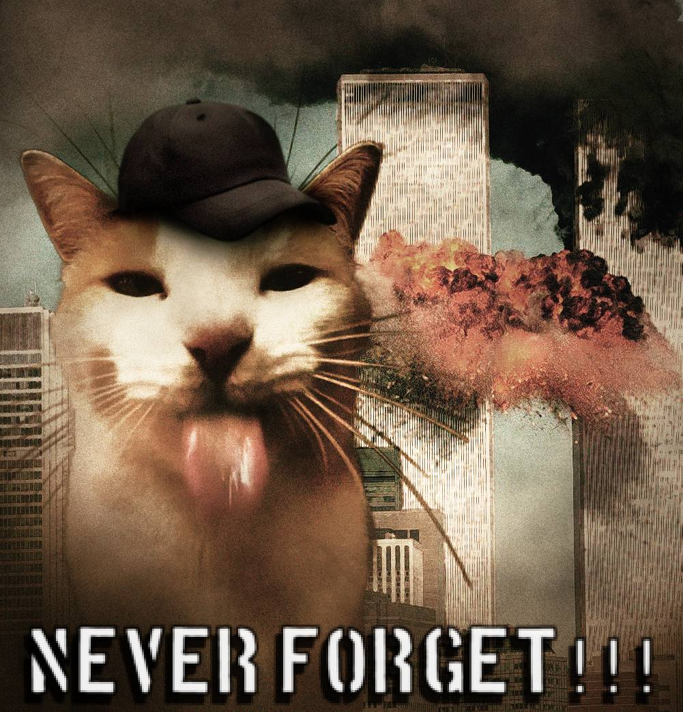

untitled-MARSZ!
untitled-MARSZ!
WELCOME!
My fellow Catmericans,
Today, our nation faced an unprecedented act of cowardice as rat terrorists struck at the heart of our great feline republic. The two Freedom Cat Towers, symbols of our prosperity and strength, were ruthlessly attacked, causing immense devastation and the loss of countless precious lives.
In this dark hour, I stand before you with a heavy heart but an unshakeable resolve. The rats may have damaged our structures, but they cannot break our spirit. Catmerica has always stood tall in the face of adversity, and we shall do so again.
I have directed our elite Feline Bureau of Investigation to use all resources at their disposal to track down these rodent perpetrators and bring them to justice. Our military forces are on high alert, ready to defend our borders against any further incursion.
To our citizens, I say this: Stay vigilant, but do not live in fear. Continue to go about your daily lives - chase your toys, nap in your favorite spots, and groom your loved ones. This is how we show these terrorists that they cannot disrupt our way of life.
In the coming days, we will mourn our losses and rebuild what was destroyed. But make no mistake, we will emerge stronger, more united, and more determined to protect our feline freedoms.
Thank you. Good night, and Bastet bless Catmerica.
